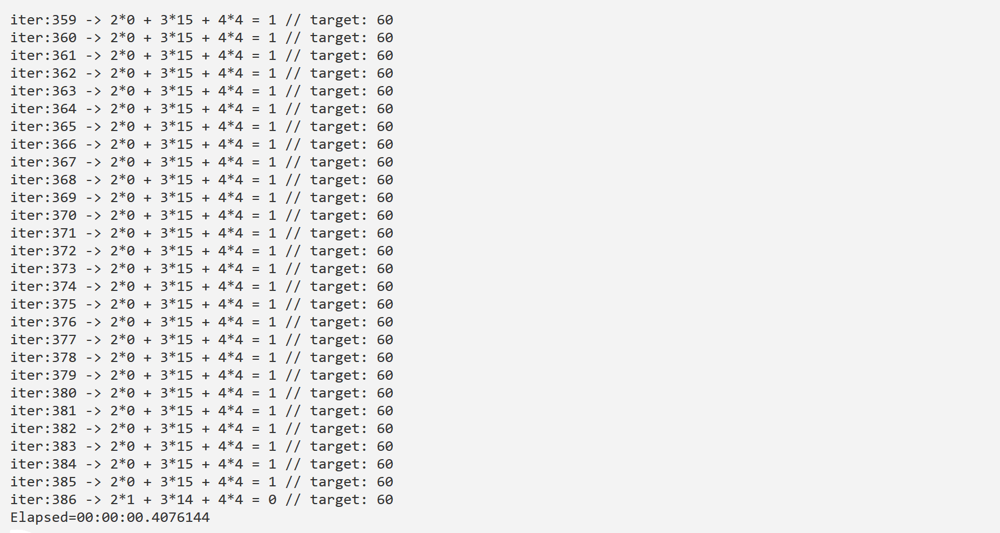

Math Equality Problem
Definition
We have the following equation: A2 + B3 + C4 = 60. The objective consist in to find the integers values for A, B and C to balance the equation. Which values we can set in A, B and C to get 60?
Model
In order to tackle any optimization problem, first we need to create a mathematical model to analyse and define the problem. The model, will help us to understand how far or close are we from the objective. Which is minimize the value function F(x) = A2 + B3 + C4. It's a very simple problem.
Architecture
In the following table we will breakdown the problem in steps. We are going to understand what kind of algorithms we need, and general comments.
| Task | Algorithm | Comments |
|---|---|---|
| generate a population | GenrPopulation class | We are going to create a population of 1s and 0s and the convert that chars in integer values. |
| Evaluate the individuals | Fitness method | Define a Fitness method to test how well the GAs is doing it's work. |
| Sort the individuals in the population | BidirectionalBubbleSort class | We need to sort the individuals in the population to understand which individuals are closer to the results and which not. This step is essential to select the best individuals. |
| Select the top ranked individuals | NaturalSelection class | We are going to use this class and the RouletteWheel method to select the most individuals in the population |
| Crossover the selected individuals | Crossover class | In this step, we are going to find 2 parents and apply crossover to create inherence. a child. |
| Apply Mutation to the inheritance | Mutation class | we apply the mutation to the inheritance in order to keep the space of search open. |
| Replacement | CreateTheNewPopulation() | A method to replace the old population for a new population, which will consist in the inheritance mutated and the selected individuals in the population (the parents) |
| Display data | ConvertData method | Since we are working with a population of chars, at some point we are going to translate all of these 1s and 0s to integer numbers. |
| Repeat up to find a solution | do while {} | We need a loop to repeat all the steps up to met some condition. For this case up to balance the equation. |
Now, we have all the necessary ingredients to build our GA and defined what we need from each of them.
Code
Here we will define the main classes and methods to operate the GA. The first chuck of code defines the population size, and the chromosome size and some variables to store the results and population. the second chunk initialize all the GA operators from Laga: GenrPopulation(), RankingSort(), NaturalSelection(), Crossover() and Mutation(). The third chunk is for save the selected chromosomes, the inheritance and the mutated inheritance.
private static int popSize = 20; //population size...
private static int chromeSize = 15; //chromosome size....
private static int[] result; //to store the results of the evaluation.
private static char[][] charPop;
GenrPopulation genPop = new GenrPopulation(popSize);
charPop = genPop.BinaryPopulationChr(chromeSize);
RankingSort sr = new RankingSort();
NaturalSelection roulette = new NaturalSelection();
Crossover cross = new Crossover();
Mutation mut = new Mutation(0.01f);
result = new int[popSize];
int eval = 0;
char[][] selChro;
char[][] sonPop;
char[][] mutPop;
int c = 1;
Stopwatch sw = new Stopwatch();
sw.Start();
With the following method we will define the fitness.
private static int Fitness(char[] arrChr)
{
int[] arrD = TransformData(arrChr);
int res = 2 * arrD[0] + 3 * arrD[1] + 4 * arrD[2];
return Math.Abs(res - 60); //we want to go closer to 0 here.
}
With the following method we will transform the chars to integers. First we extract the Information from the chromosome and then we transform that binary information into integers
private static int[] TransformData(char[] arrChr)
{
char[] firstNum = LagaTools.ExtractDNA(arrChr, 0, 5);
char[] secondNum = LagaTools.ExtractDNA(arrChr, 5, 5);
char[] thirdNum = LagaTools.ExtractDNA(arrChr, 10, 5);
int a = LagaTools.BinaryChromosomeToInteger(firstNum);
int b = LagaTools.BinaryChromosomeToInteger(secondNum);
int c = LagaTools.BinaryChromosomeToInteger(thirdNum);
return new int[] {a, b, c};
}
Here es where we replace the old population with the one. private static char[][] CreateTheNewPopulation(char[][] theOldPop, char[][] sonPop)
{
Random rnd = new Random();
int index;
int scope = theOldPop.Length;
for (int i = 0; i < sonPop.Length; ++i)
{
index = rnd.Next(scope);//rnd.nextInt(scope);
theOldPop[index] = new char[sonPop[i].Length];
Array.Copy(sonPop[i], 0, theOldPop[index], 0, sonPop[i].Length);
}
return theOldPop;
}
Finally the GA loop, where all the methods comes to play. We check the fitness, we sort, we transform the data and print in the console the top ranked solution, apply the selection, crossover, mutation and new population. At the end we have the stop condition.
do
{
for (int i = 0; i < popSize; i++)
result[i] = Fitness(charPop[i]);
sr.BidirectionalBubbleSort(charPop, result, false);
eval = result[0];
int[] arrD = TransformData(charPop[0]);
string message = String.Format("iter:{0} -> 2*{1} + 3*{2} + 4*{3} = {4} // target: 60", c, arrD[0], arrD[1], arrD[2], eval);
Console.WriteLine(message);
c++;
selChro = roulette.RouletteWheel(charPop, result, popSize);
sonPop = cross.SinglePointCrossover(selChro, 0.2f, 7);
mutPop = mut.BinaryCharMutation(charPop, 0.02f);
charPop = CreateTheNewPopulation(selChro, mutPop);
} while (eval != 0);
sw.Stop();
Console.WriteLine("Elapsed={0}", sw.Elapsed);
Console.ReadLine();
Results
The GA was able to resolve the balance equation proposing different number combinations for the parameters A, B and C. In almost all tests, the GA also converged in short period of time.
- This experiment is based on the following paper: "Genetic Algorithm for Solving Simple Mathematical Equality Problem", Denny Hermawanto, Indonesian Institute of Sciences (LIPI), INDONESIA.
- To download the experiment from: Math equality problem
- The image below, shows an example result of the GA executed: 